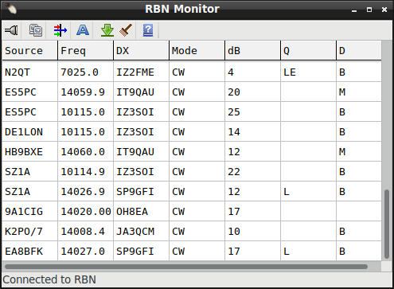
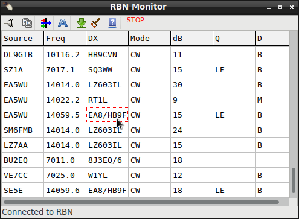
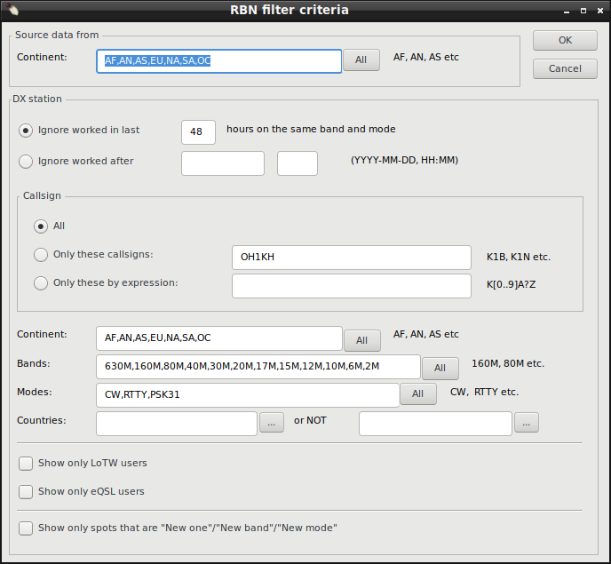

|
WARNING! Backup your data often! BACKUP your log directory at the end of EVERY session! All that you need to backup and store in a safe place is the log database directory located in the ~/.config/cqrlog/database folder, or you can enable the autobackup function in Preferences. This autobackup function creates an ADIF file with a backup of your log. /td> |
| [Menu] |

The RBN control window opens from NewQSO/Window/RBN control, the RBN monitor from NewQSO/Window/RBN monitor.
The small window that owns the connection to the Reverse Beacon Network. Everything that shows RBN spots - the RBN monitor, the band maps and the linked Grayline map - listens to this one connection, so there is one socket to the server no matter how many windows are open, and closing any of them changes nothing about the connection. From left to right:
Closing the RBN control window does not disconnect. "Connect to RBN after program starts" in Preferences/RBN support connects the main source when the log opens.
Grid cells for DX heard:
|
Tool buttons from left to right are:
|
 |
 |
If any column in any RBN spot row is clicked scrolling is paused to enable better study of spot. If tool button "Go to last line" is pressed, or if focus is moved to another form than RBN monitor, display scrolling is again released. Double click on any column of RBN spot row will take the DX callsign of that row to New QSO and move rig frequency to DX frequency (if rig CAT is used). That also releases display scrolling again.
The monitor is only a listener: closing it stops its list, not the connection, and it never filters anything for the other windows.

The filter is applied by CQRLOG to the spots after they arrive and it is shared by the RBN monitor and all band maps. It has the DX station side (callsigns, "ignore worked in the last N hours on the same band and mode" or "ignore worked after a moment", LoTW/eQSL users only, new one/band/mode only), the spotter side (continent, callsign) and bands, modes and countries. The "worked" rule is answered from your log through a shared cache, so many windows do not multiply the database queries. A change is applied at once to the spots still valid, without a reconnect. The Grayline map is not affected by this filter.
What the server itself does not send (a private skimmer, a filtered feed) cannot be brought back by this filter; that is a property of the source, not of CQRLOG.
Right click anywhere in the RBN monitor window (on the grid or on the toolbar) to open a menu with Send spots to band map. When it is checked, every spot that passes the global RBN filter is also placed into the band maps, next to the spots coming from the DX cluster. The setting is remembered between sessions and takes effect immediately, there is no need to reconnect to the RBN server.
The graphical band maps collect the spots whether or not a band map window is open, so a band map opened later shows the spots that are still valid. The text band map only receives spots while it is open.
RBN entries are drawn in a single colour, which you can change in Preferences/Bandmap/Color - "Select color of entry added from RBN monitor". They are deliberately not coloured by DXCC status the way DX cluster spots can be: RBN traffic volume is much higher, and the flat colour also makes it easy to tell machine decoded skimmer spots (which can carry busted callsigns) apart from spots sent by humans. If the same station is already in the band map from the DX cluster, the RBN spot updates that entry instead of adding a duplicate.
| [Menu] |